UniBuddy is a human-centered campus exploration system designed for freshmen and visitors at XJTLU. This portfolio documents our end-to-end process of our system across W1–W10.
BOOM!
ZAP!
UNIBUDDY · TIMELINE
10 WEEKS · ONE MISSION!
From brainstorm to final deliverables — our human-centered timeline, week by week.
BRAINSTORM
1Decide topic
2Decide division of group labor
3Brainstorm ideas
W1
W2
INTERVIEW
1Interview freshmen on campus
2Interview friends and relatives off campus
QUESTIONNAIRE
1Draft requirement investigation questionnaire
2Release questionnaire
3Collect data of questionnaire
W2
W3
ANALYSIS
1Analyze questionnaire data
2Draw charts
PERSONA
1Draw personas
2Draw user journey map
W4
W5
PROTOTYPE
1Iterate sketches
2Low-fi Figma
SYSTEM ARCH
1Draw system architecture
2System demo
W6
W7
EVALUATION
1System iteration using Heuristic Evaluation
ITERATION
1Pilot test
2System iteration based on feedback
W8
W9
SUS TESTING
1Draft SUS questionnaire
2Release & Collect data
3Analyze data
FINAL ANALYSIS
1Draw charts
2Final improvement
W10
THE END · MISSION COMPLETE!
Research
Why we chose the social track and what the literature says
WHY WE CHOSE THE SOCIAL TRACK
Our group chose the "Social" track, focusing on the campus tour for the XJTLU SIP campus. When navigating our large campus, our two main target users—freshmen and visitors—often feel lost. Freshmen urgently need to break the ice and build a sense of belonging, while visitors want to experience the campus culture in a limited time. However, current navigation tools only offer cold "Point A to Point B" physical routing, ignoring the potential emotional connections between people and the campus.
To address this, we developed the "UniBuddy" campus exploration system. For basic needs, it provides building information, facility locations, real-time positioning, and clear classroom routing. More importantly, UniBuddy acts as a warm social medium. We introduced gamification designs like "Blind Box Routes" and "Badges Collection" to turn boring navigation into a fun journey. We also added a campus review and comment section. These features encourage users to actively explore. By sharing unique routes, showing off badges, and exchanging thoughts, users can naturally start conversations.
We chose the social track because exploring physical spaces is a great bridge for social interactions. UniBuddy aims to give the XJTLU campus a stronger social attribute, helping freshmen integrate into the community and deepening visitors' appreciation, ultimately turning a physical campus into a connected social hub.
QUESTIONNAIRE ANALYSIS
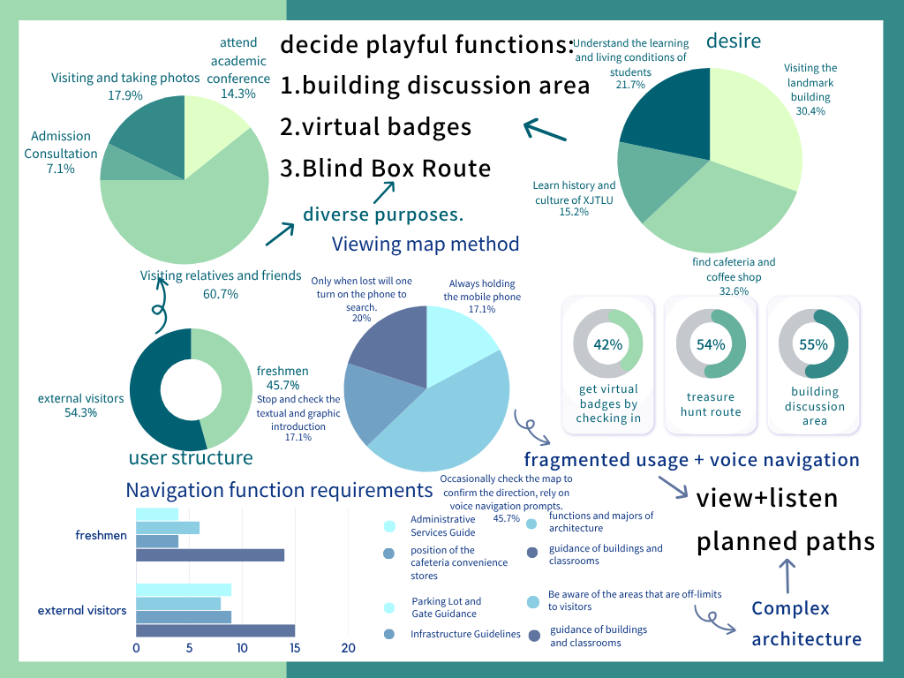
GAP ANALYSIS
✨ Academic Foundation
While traditional virtual campus tours effectively provide spatial information, they often struggle to create emotional engagement. Prior studies on location-based interaction and gamification show that playful mechanisms can increase movement motivation and exploration. This supports UniBuddy’s core design direction: transforming cold navigation into a social, playful campus experience.
Cannot support route exploration scenarios directly.
✨ The Design Opportunity
Users currently switch between official maps (for directions), social platforms (for discovery), and habit apps (for motivation). UniBuddy integrates these fragmented experiences into one system through:
LBS Navigation for reliable wayfinding.
Community Insights for social discovery and peer context.
Lightweight Gamification for sustained engagement.
EVIDENCE OF LIFE
Our team conducted interviews with potential users and carried out on-site observations at the school.
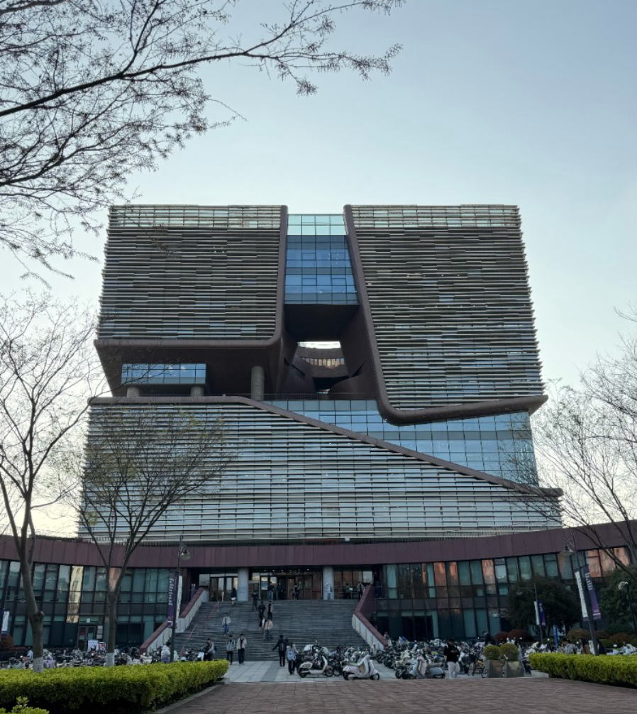
Motivation & Research
Why we chose this direction and who the key stakeholders are
RATIONALE
Why we chose the social track
Our group chose the "Social" track, focusing on the campus tour for the XJTLU SIP campus. When navigating our large campus, our two main target users—freshmen and visitors—often feel lost. Freshmen urgently need to break the ice and build a sense of belonging, while visitors want to experience the campus culture in a limited time. However, current navigation tools only offer cold "Point A to Point B" physical routing, ignoring the potential emotional connections between people and the campus.
To address this, we developed the "UniBuddy" campus exploration system. For basic needs, it provides building information, facility locations, real-time positioning, and clear classroom routing. More importantly, UniBuddy acts as a warm social medium. We introduced gamification designs like "Blind Box Routes" and "Badges Collection" to turn boring navigation into a fun journey. We also added a campus review and comment section. These features encourage users to actively explore. By sharing unique routes, showing off badges, and exchanging thoughts, users can naturally start conversations.
We chose the social track because exploring physical spaces is a great bridge for social interactions. UniBuddy aims to give the XJTLU campus a stronger social attribute, helping freshmen integrate into the community and deepening visitors' appreciation, ultimately turning a physical campus into a connected social hub.
THE GAP
Paper reference
[1] Y. Liu et al., "Design and Implementation of Intelligent Tour Guide Application System," in 2022 IEEE 10th Joint International Information Technology and Artificial Intelligence Conference (ITAIC), Chongqing, China, 2022, vol. 10, pp. 2176–2179, doi: 10.1109/ITAIC54357.2022.9836511.
[2] S. R. Shukla et al., "Destiny—A Campus Virtual Tour," Grenze Int. J. Eng. Technol., pp. 70–78, 2023.
[3] C. Andri, M. H. Alkawaz, and A. B. Sallow, "Adoption of Mobile Augmented Reality as a Campus Tour Application," Int. J. Eng. Technol., vol. 7, no. 4, pp. 64–69, 2018.
[4] Suwarno and N. P. Murnaka, "Virtual Campus Tour (Student Perception of University Virtual Environment)," J. Crit. Rev., vol. 7, no. 19, pp. 4964–4969, 2020.
[5] S. Laato, D. Fernández Galeote, F. Altarriba Bertran, K. Papangelis, and J. Hamari, "How Location-Based Games Incentivize Moving About: A Study in the Context of Nature-Going," Proc. ACM Hum.-Comput. Interact., vol. 7, no. CHI PLAY, pp. 642–664, 2023, doi: 10.1145/3611051.
Aesthetic fatigue caused by the dull UI architecture
STAKEHOLDER 01
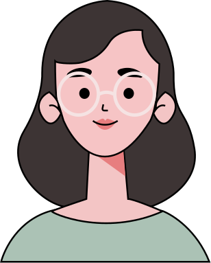
STAKEHOLDER 02
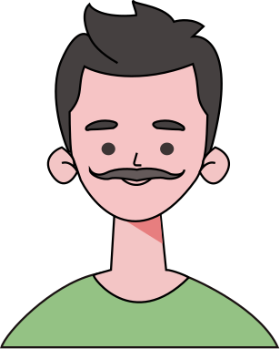
Insights to Features
From persona pain points to concrete UniBuddy feature decisions
USER PERSONAS & INSIGHTS
EXTERNAL VISITOR
“I want to feel XJTLU's vibrant culture without a personal guide.”
Scenario
On a weekend Open Day, Jenkins and his child use the web app's interactive 'Highlight Tour' map for a photogenic and representative self-guided tour.
Goals & Needs
Discover XJTLU's iconic landmarks (e.g., Central Building, Tunnel) to evaluate the campus.
Experience the university's academic and cultural atmosphere for his child's future application.
Pain Points
Totally unfamiliar with the large campus layout.
Without a personal guide, misses historical/cultural significance.
Long text descriptions feel overwhelming.
FRESHMAN STUDENT
“I want to learn more about XJTLU, especially the campus.”
Scenario
During the first week of the semester, Chen walks around the campus using the mobile web app to find the IT center while discovering what nearby buildings are used for.
Goals & Needs
Locate essential life-service spots quickly (e.g., IT Desk, One-Stop Center).
Explore different academic buildings to support future major decisions.
Pain Points
The massive campus scale is overwhelming.
Existing maps lack clear function explanations.
Hard to build belonging quickly through current navigation tools.
USER JOURNEY MAP
REQUIREMENTS LIST
Basic Features
Real-time positioning.
Classroom search.
Bilingual voice guidance (Chinese and English).
Route planning with two modes: Freshman mode and Parent mode.
Playful Features
Blind-box routes.
Photo check-ins with badge collection.
User-created custom routes.
User Requirements
Journey map, needs, and opportunity areas
Questionnaire Analysis
USER JOURNEY MAP
Iterative Design
Timeline-based evolution from sketches to low-fi decisions
Prototype
sketch1
version1: WebAR Navigation
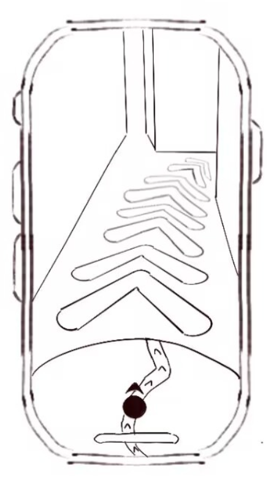
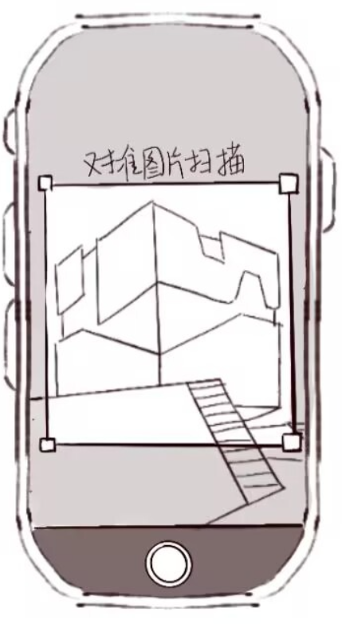
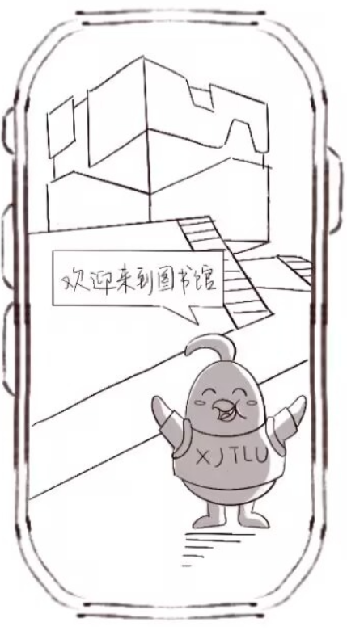
Why Rejected: Rejected due to technical constraints. Additionally, user feedback revealed that holding a phone up constantly misaligns with users' thoughts for a relaxing campus stroll.
sketch2
version2: Dynamic Map Routing
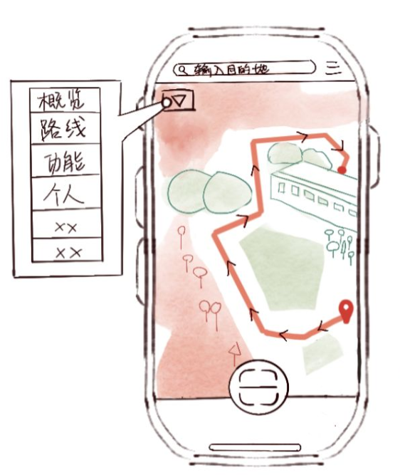
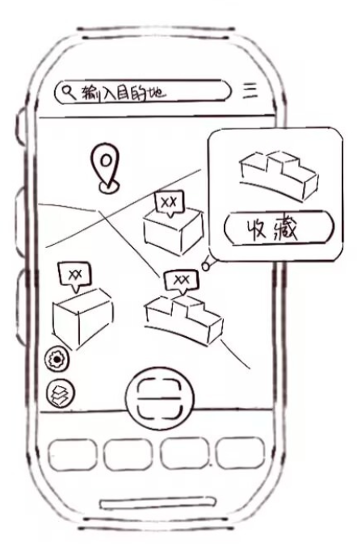
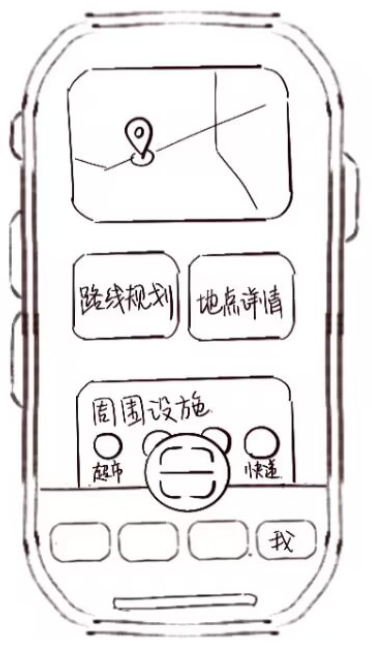
Why Rejected: Rejected via Heuristic Evaluation. Testing showed severe loading delays, violating Shneiderman's rule of "Offer Informative Feedback" (exceeding human attention span limits) and breaking the playful flow.
sketch3
version3: Custom Illustrated Routes
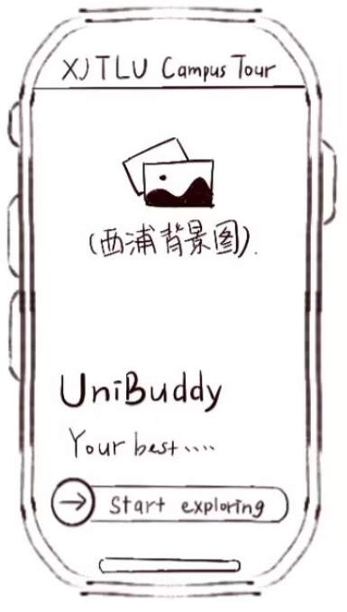
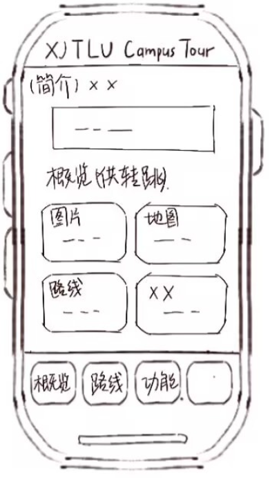
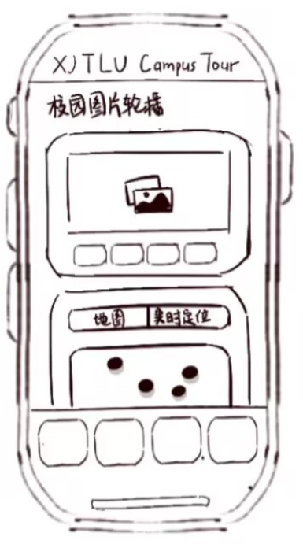
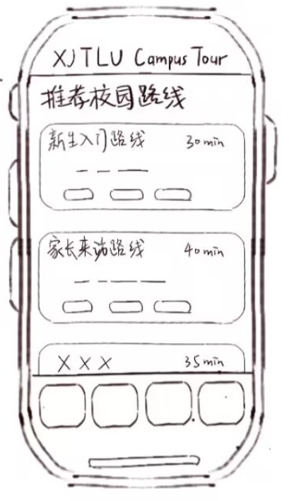
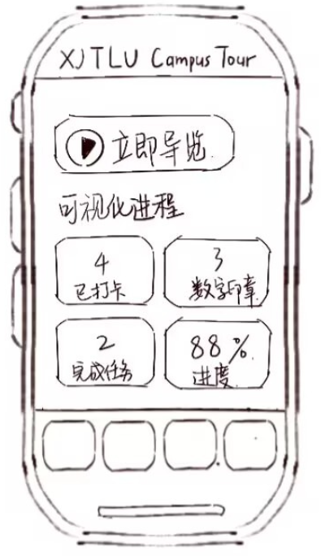
Why Selected: It maximizes visibility and system reliability. It ensures perfect internal consistency with our UI design, providing a zero-latency, straightforward experience that users preferred.
low-fi figma
High-fidelity designs - polished UI with brand colors
SPLASH PAGE & HOME PAGE
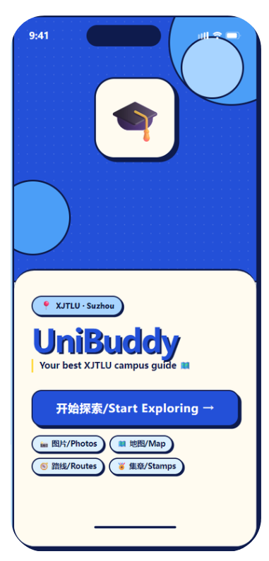
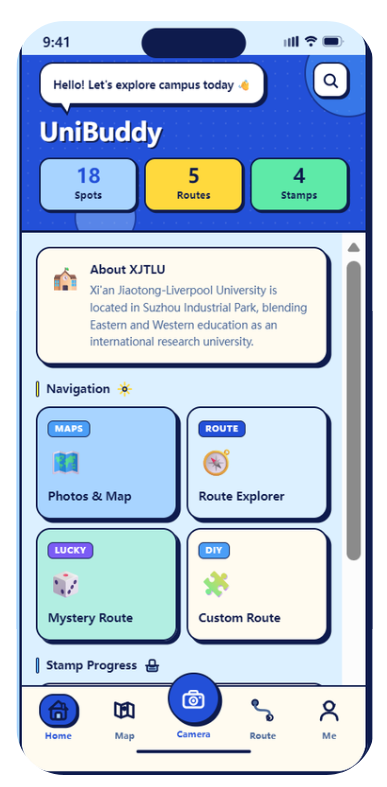
MAP PAGE: basic functions and playful function of building discussion area
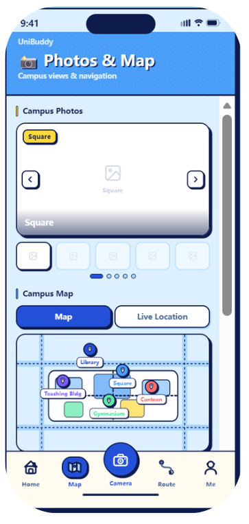
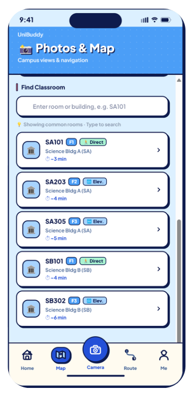
ROUTE PAGE: playful function of Blind Box Route
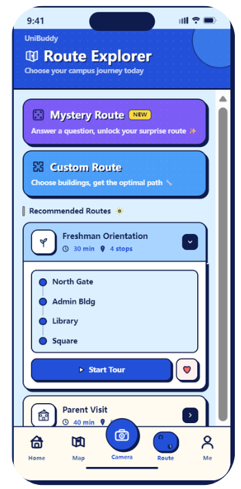
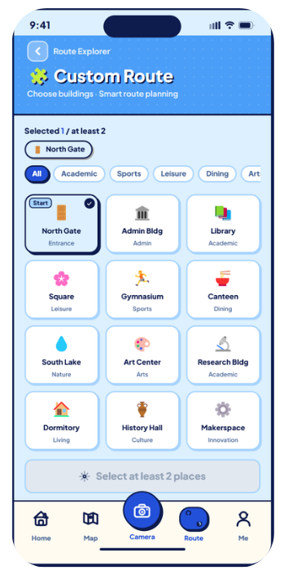
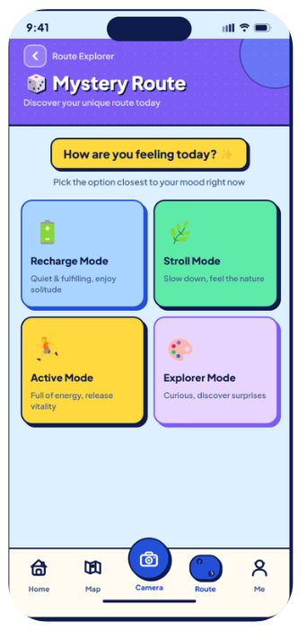
CAMERA PAGE & MY PAGE: playful function of virtual badges
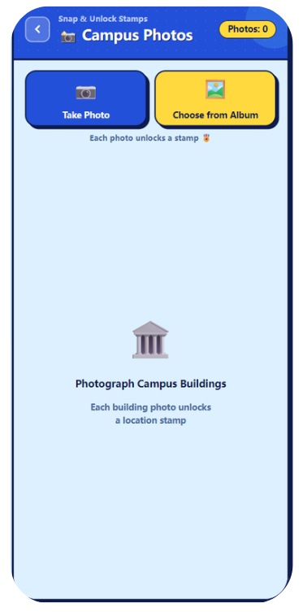
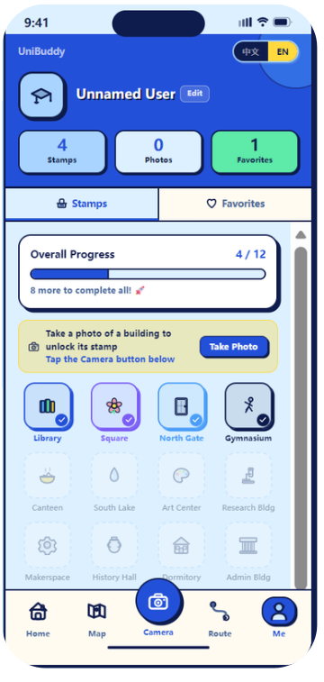
Evaluation & system Iteration
Architecture context, testing evidence, and iteration decisions
SYSTEM ARCHITECTURE
Heuristic Evaluation
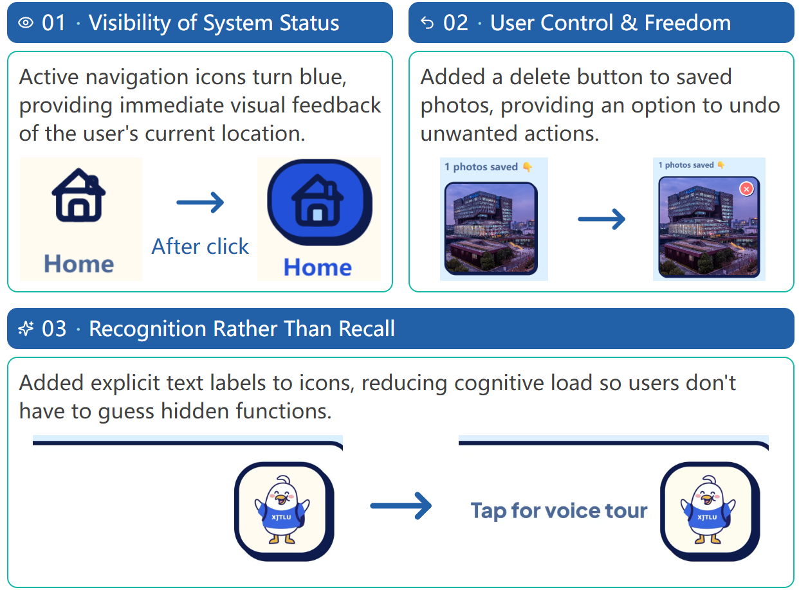
Pilot Test Results (N=5)
Strengths: High scores in Efficiency, Playfulness and Visual Appeal prove our decision to use static illustrated routes, successfully eliminating loading delays while maintaining engagement.
Improvement: To address the relatively low learnability score observed in our testing, we integrated a user guide into the system to facilitate a smoother onboarding process.
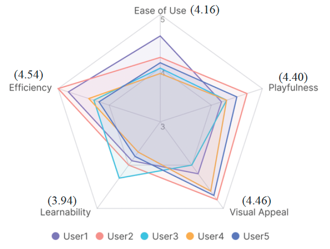
Preference Testing
To evaluate the effectiveness of our "Blind Box" route feature, we conducted a usability test using a within-subjects design. In this study, every participant was asked to experience both Version A (mood-based selection) and Version B (purely random lottery). To avoid any bias caused by the order of testing, we implemented counter-balancing, where half of the participants started with Version A and the others started with Version B.
After the tasks, we collected user feedback through questionnaires. The qualitative data shows a clear preference for Version A.
Version Comparison
Version A
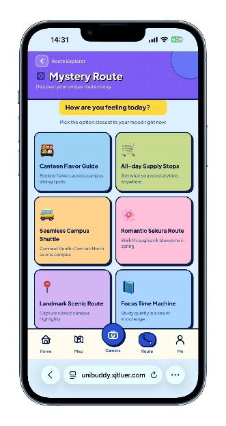
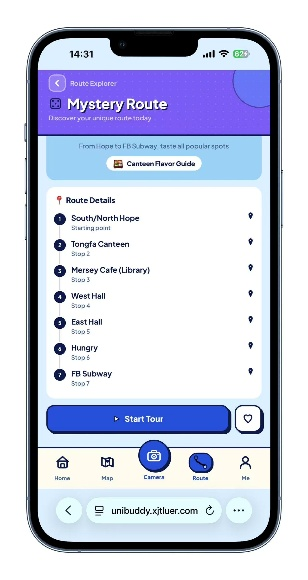
User Feedback
In order to enhance our usability, we continued to conduct user interviews and made some modifications to certain details.
To measure the overall usability of the system, we asked 10 participants to try our program and fill out the System Usability Scale (SUS) questionnaire. After calculating the results, the average SUS score for our system was 69.7. Since research shows that a score above 68 is considered above average, this means the overall usability of our app is quite acceptable.
However, looking closely at the feedback, we found a few areas for improvement. First, the app is actually a bit complex for beginners. According to the questionnaire results, some users felt the system was unnecessarily complex and that they needed to learn a lot of things before they could get going with the system. It takes a little while for new users to get used to the route navigation and navigation features.
Second, we ran into some technical limitations. Because the project is currently hosted on GitHub Pages, the connection isn't always stable. During the testing, some users experienced loading failures or noticed that the images loaded very slowly. This definitely affected their testing experience and might have lowered their impression of the system.
In short, the SUS results show that the app is functional and generally okay to use. But for future iterations, we need to make the interface more beginner-friendly and find a better hosting solution to solve the slow loading issues.
Team
Four group members
MEMBER 01
Zhiying Tang
ID: 2360010 Intro: I am a third-year student at XJTLU, with a strong passion for artificial intelligence and data-driven systems. In this project, I mainly focus on designing and developing the campus tour guide system. I enjoy exploring how technology can be transformed into practical and user-friendly solutions that create meaningful impact.
Contribution: 25% Role: Alpha Version Usability Testing, Iterative Refinement (Before & After), System Architecture, Bug Fixing
MEMBER 02
Xinyan Xue
ID: 2361538 Intro: I am Xinyan Xue, a junior student majoring in Information and Computing Science at Xi'an Jiaotong-Liverpool University. I specialize in full-stack development and computational theory, with hands-on experience in Java and React to build innovative technical solutions.
Contribution: 25% Role: Gap Analysis, Requirements List, Evidence of Life, Design Alternatives
MEMBER 03
Jiayu Wang
ID: 2362046 Intro: I'm a third-year student at XJTLU, passionating about gaming and HCI. This course taught me that great playful design is built on empathy, real user research, and iteration.
Contribution: 25% Role: Low-Fi & High-Fi Figma Prototypes, Crazy Eights Sketches, User Personas, User Journey Map.
MEMBER 04
Jiayi Chu
ID: 2361209 Intro: I am a third-year student at XJTLU, deeply interested in human-computer interaction and user-centered design. I always enjoy exploring how innovative technologies can be designed to create meaningful and intuitive digital experiences.
This workflow explains how UniBuddy was built from an initial idea into a working React + Vite campus navigation prototype.
Problem → Prototype → Framework → Components → Integration → Testing → System
2. Idea Exploration
From Problem to Product Vision
At the very beginning, we didn't write the code directly. Instead, we first clarified:
Why do we need to build this system
Who will use this system
What problems do users encounter in campus navigation
What core issues does our minimum viable version aim to address
According to questionnaire surveys and interviews, new students and visitors often struggle to recognize buildings, find classrooms, and plan campus routes in XJTLU. Therefore, UniBuddy aims to make campus navigation more visual, playful, and beginner-friendly.
Step-by-Step Tutorial
Step 1: Collect Campus Navigation Pain Points
The freshmen couldn't find the teaching building in S buildings
I don't know which floor the classroom is on
The names of the buildings on the map are not intuitive, cannot directly know each building function
The visiting route lacks interest
Parents or visitors don't know how to tour the campus
The user hopes that after collecting the route, it can be opened again
Step 2: Define Target Users (Persona)
User Type
Need
Freshmen
1. Look for teaching buildings, classrooms and get familiar with the campus 2. Save common routes and find convenient spots
Visitors
1. Quickly understand the campus structure 2. Follow the recommended route to visit the campus
Step 3: Define Important functions
Priority
Feature
Must
Home Page, Campus Map, Route Planning(outdoor, indoor), Route Recommendation
Should
Collection routes, blind box routes, and convenient spots
I want to build a campus navigation prototype for new students. Help me define the product vision, target users, key pain points, and feature list. The system should feel visual, playful, and beginner-friendly.
3. Low-Fidelity Prototype
Turning Ideas into User Flows
Next, we transformed the idea into specific system pages and confirmed the following points:
Points
Measures
Is a login interface needed?
No need. It's rather troublesome for visitors from outside. The function cannot be obtained directly.
Where do users enter?
There should be a flashing screen. Users can enter by clicking "Start".
Which pages does the system need?
The system can include a home page, a map page, a route page and a user page.
What is displayed on the homepage?
The home page should display the main functions provided by the system.
How can maps and routes be connected?
Mark the locations of buildings on the static campus map and support clicking to view the building profiles. At the same time, it connects to the API to achieve real-time positioning and display the current location of the user.
Based on this product idea and prototype draft, help me design a low-fidelity screen flow for a campus navigation app.
Include Splash, Home, Map, Route, Mystery Route, Custom Route, and Profile screens.
Explain what each screen should contain.
4. System Framework
Building the App Framework
Convert the Figma framework into code and build a runnable React + Vite project. For the time being, do not implement the specific functional logic of each page.
Step-by-Step Tutorial
Step 1: Create the React + Vite Project
npm create vite@latest unibuddy
cd unibuddy
npm install
npm run dev
The page is in src/app/components/, the Context is in src/app/context/, and the data is in src/app/data/.
The App layer provides FavoritesProvider; RootLayout provides LanguageProvider and CameraProvider.
Please follow the current usage of PhoneShell/BottomNav and MUI + Radix + motion, and do not revert to react-router-dom or framer-motion.
5. Core Components
Building Small UI Blocks
Next, develop and integrate each core functional component one by one.
Component 1: PhoneShell Purpose Set the adaptive screen, with the outer light blue background adapting to the color of the portfolio, and pair it with the bottom navigation bar. Includes
Outer full-screen container + inner main content column
StatusBar: Currently, it is a placeholder export (return null), reserving a structure for the top information bar of each screen
Component 2: BottomNav Purpose Providing switching between Home, Map (photo/map page), Camera, Route, and Profile. The "Camera" is the action for opening the global camera and does not provide a separate route. Includes
The navigation and paths of react-router: /home, /pictures, /route, /profile
Interaction with onboardingState: Step-by-step highlighting instructions for the bottom bar in steps 1 to 5 (mask + target button rect)
After completing the guidance, setOnboardingStep("done")
Component 3: ComicCard + Route/Collection related UI Purpose The route and collection functions are realized through the combination of ComicCard and HomeScreen/RouteScreen: home page four-grid entry (map/route/blind box/customization), route page entry bar, home page collection list, etc. Includes
ComicCard: White background, rounded corners, optional stroke and comic shadow; "onClick"
Home page navCardDefs: MAPS/ROUTE/LUCKY/DIY and other tags and jumps
FavoritesContext: The favorite routes are displayed as a ComicCard list on the home page. Open the map or route page
RouteScreen: Large entry buttons such as blind boxes and custom ones (including Burst and other decorations)
Component 4: Campus Map（PicturesAndMapScreen + Leaflet） Purpose Use Leaflet to display the campus map, building locations and optional guidedTour routes (including Guided Tour state brought in from the collection). Includes
Dynamic ensureLeafletMap/destroyLeafletMap manages the map lifecycle
Building/route related markers and interactions (logic for selection, highlighting, etc. is concentrated at PicturesAndMapScreen)
Combined with PhoneShell and BottomNav activeTab="Map"
Component 5: Onboarding Guide Purpose Set up guidance words to help new users understand the system functions. Includes
onboardingState.ts: 0 = language-related; 1-5 = Item-by-item explanation in the bottom column; 6 = UniAIBuddy card guidance; done = End
HomeScreen: Language step UI, listening to ONBOARDING_EVENT_NAME, restartTutorial, etc
BottomNav: 5-step guide text for the bottom column
Entry points for the "Replay Tutorial"
Vibe Coding Prompt
Help me build a React + react-router campus app with:
PhoneShell: max-width column, safe-area, optional bg, children + global camera overlay
BottomNav: Home, Map (/pictures), Camera (opens overlay), Route, Profile; activeTab prop; optional multi-step nav onboarding tied to a small onboarding state module
Shared ComicCard for content blocks; home grid shortcuts and route/favorites UI composed from cards and buttons (no single giant RouteCard file)
PicturesAndMapScreen: Leaflet map with markers and optional guided tour from router state
Onboarding: steps 0–6 in a tiny module, synced via custom events; language step on Home, nav steps in BottomNav, AI card step on Home
Use clear props, TypeScript, and contexts where the app already uses them (language, camera, favorites).
6. Page Construction
Assembling Components into Screens
Combine the defined components to generate a complete page
Screen 1: Splash Screen Function
Showcase the UniBuddy brand and mascot visuals (including comic-style decorations and halftone backgrounds)
Bilingual (Chinese and English): Campus label, subtitle, main CTA, functional chip copy (camera/Map/route/badge)
After the user clicks on the CTA, navigate to /home (non-automatic redirect)
Screen 2: Home Screen Function
Welcome bubbles and "About" instruction cards
Switch between Chinese and English; The "Rewatch Tutorial" button on the home page (reset the onboarding status such as the bottom navigation guidance)
UniAIBuddy: Entry Card + Full-screen Dialogue (Preset questions, Q&A related to this system)
School reviews (from the perspective of the entire school) and user review streams from the perspective of new students/visitors
Classroom/classroom navigation and related interactions (linked with Classroom data)
Screen 3: Map / Picture Navigation Screen Function
Leaflet Campus Map and Hotspots (Buildings/Locations); Selectable points and path planning (campus walking map)
Content area related to "Real Scenes/Pictures" (multiple sets of campus photos, tags, and enlarged light boxes)
List of convenient information (such as one-stop service, sanitation facilities, etc., bound to map hotspots, can jump to map focus)
Guided tour passed in from the recommended route "Start Tour": Display the route and stops on the map
Auxiliary information such as short user reviews related to architecture (persistent locally)
Screen 4: Recommended Route Screen Function
Top entry: Jump to blind box route (/mystery-route), custom route (/custom-route)
Recommended routes (expandable): ① Freshman Route ② Parent Visit Route ③ In-depth Exploration Route
After each item is expanded: site list, estimated duration and number of sites, "Start Tour" (enter the map with guidedTour status), collection (heart shape)
Screen 5: Mystery Route Screen Function
Gamified Exploration: Select a theme first (food/small store/shuttle/cherry blossoms/landmarks/learning, etc.)
Three-stage UI: Topic selection → revealing (approximately 1.8 seconds) → the result page displays a fixed sequence of sites on this topic
The blind box route can be collected on the result page. Return to the previous level and point to the recommended route page
Screen 6: Custom Route Screen Function
Design intent (consistent with the entry points of the home page/route page): User-defined starting and ending points, multi-point planning, etc
Current code status: CustomRouteScreen.tsx is an empty file. The route has been registered but is not implemented on the page. The document/presentation should be marked as "To be developed" or the screen should not be taken for now
Screen 7: Profile Screen Function
Editable nickname (localStorage persistence); Statistics: Number of seals, number of camera photos, number of collections
Tab: Seal (Badge)/Collection Route
Collection: Displayed by type; Collections with guidedTour will open the map and bring in the guide; otherwise, they will fall back to the route page
Linkage with camera capabilities: Seal unlock, number of photos taken (from CameraContext)
Vibe Coding Prompt
You work in the UniBuddy warehouse. There is already a batch of UI components and pages that have been set up in the project (PhoneShell, StatusBar, BottomNav, various * screens, ComicCard, various ICONS, etc.) and global capabilities (react-router's HashRouter, FavoritesContext, CameraContext, LanguageContext).
The current task is not to design a new UI from scratch, but to "integrate": connect [fill in here: for example, a new feature/a certain user process/several isolated components] to the existing architecture, so that users can fully implement it.
Please follow the sequence below and try to modify only the necessary files
First, read: src/app/routes.tsx, RootLayout, Screen and Context related to this task; Clarify the tab behavior of the existing path (#/home, #/pictures, #/route, etc.) and BottomNav.
Priority for integration methods: Reuse the existing layout (PhoneShell + StatusBar + BottomNav), color matching and border shadow habits (refer to the adjacent Screen). The way of passing data using navigate + location state is consistent with the guidedTour mode of Route → Pictures.
Copywriting: When adding an i18n key, it should be supplemented in pairs of Chinese and English in LanguageContext. Hard-coded long sentences are prohibited (except for extremely short debugging copywriting).
Status: Prioritize the use of existing contexts; When cross-page persistence is required, the naming style should be consistent with the existing localStorage key of the project.
Self-check after completion: Relevant pages can be entered/returned to, the bottom bar is highlighted correctly, and there are no console error reports. Execute the build command in the project root directory and make sure it passes.
If the existing implementation conflicts with the requirements, briefly describe the conflict points in the reply and provide an integrated solution with the minimum changes. Do not carry out large-scale irrelevant refactoring.
7. Testing & Iteration
Improving the System Through Feedback
Improve the system based on the suggestions provided by user testing.
Self-evaluation by Heuristic algorithms
Collect user feedback and insights
Conduct pilot testing on the navigation system to evaluate its feasibility and effectiveness.
8. Deployment
Deploying the System on Github
Push the local project to the GitHub repository via Git, configure the GitHub Pages deployment, and finally generate a publicly accessible https:// username.github.io/repository name page
Step-by-Step Tutorial
Step 1: Push the project to Github
# If Git has not been initialized yet
git init
# Optional: The default branch name is main (consistent with GitHub)
git branch -M main
# Temporarily save and submit
git add .
git commit -m "Initial commit: UniBuddy prototype"
# Add Remote Repository (HTTPS Example)
git remote add origin https://github.com/<USER>/<REPO>.git
# First push and establish upstream tracking
git push -u origin main
Step 3: Fix Static Routing Issues If using GitHub Pages, it is recommended to use HashRouter instead of BrowserRouter
Step 4: Confirm Deployment
Check:
Is GitHub Actions green? (Can the online URL be opened)
Is it normal to refresh the page?
Is the size of the mobile phone normal?
9. Summary
This workflow documents how UniBuddy was built through a Vibe Coding process: starting from campus navigation pain points, translating them into low-fidelity flows, scaffolding a React + Vite system, developing reusable components, integrating end-to-end user journeys, iterating through feedback, and finally deploying a working prototype for public demonstration.